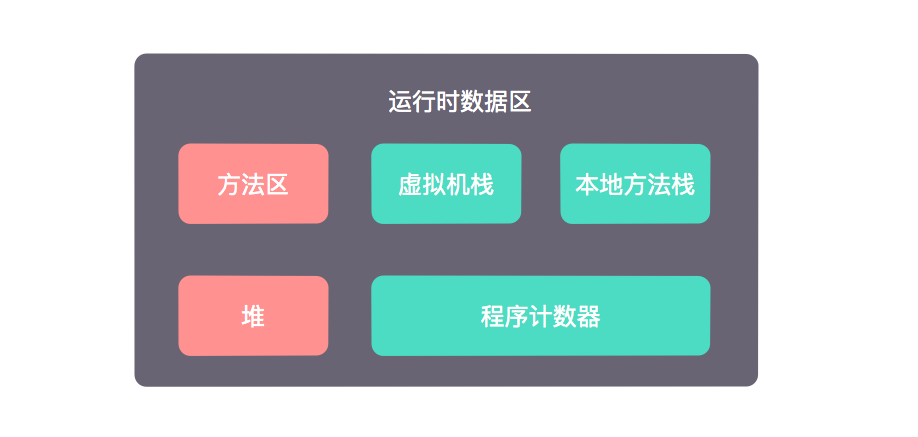

Java内存区域
对于Java程序员来说，内存不需要我们直接管理，而是由JVM自动管理，这大大方便了程序的编写。但是我们又必须了解JVM是如何管理内存的，这是因为它
- 可以帮助我们写出正确的代码
- 一旦发生内存泄露或内存溢出的问题，可以帮助我们定位问题
- 可以帮助我们在内存方面对程序进行性能优化
JVM自动内存管理机制内容比较多，本篇博客就先介绍最基础的Java内存区域以及内存溢出异常。
运行时数据区
Java管理的运行时数据区可以分为2个部分，一部分是所有线程共享的内存区域，包括方法区和堆；另一部分是线程私有的内存区域，包括虚拟机栈、本地方法栈和程序计数器。

方法区
- 方法区是线程共享的内存区域
- 方法区主要存储已被JVM加载的类信息、常量、静态变量、即时编译器编译后的代码等数据
- Java7以及之前的版本，HotSpot虚拟机用永久代来实现方法区，Java8则使用Metaspace实现方法区
- 当方法区无法满足内存分配需求时，将会抛出OutOfMemoryError
- 可以通过JVM参数来控制方法区内存的最小值和最大值
- Java7：
-XX:PermSize=10M -XX:MaxPermSize=10M - Java8：
-XX:MetaspaceSize=10M -XX:MaxMetaspaceSize=10M
- Java7：
堆
- Java堆是JVM管理的最大一块内存，同样是线程共享的内存区域
- Java堆主要目的是存放对象实例，几乎所有的对象示例都分配在堆中
- Java堆分为新生代和老年代，分代主要是为了提高GC效率
- 当堆中再也没有内存分配给对象实例时，将会抛出OutOfMemoryError
- 可以通过JVM参数来控制堆的大小
-Xms20M -Xmx20M -Xmn10M，这三个参数分别表示堆内存的最小值、最大值和新生代内存值的大小，堆内存值减去新生代的值就是老年代的大小
虚拟机栈
- 虚拟机栈是线程私有的内存区域，它的生命周期与线程相同
- 每个方法调用时会创建一个栈帧用于存储局部变量表、操作数栈、动态链接、方法出口等信息，每个方法从调用到返回的过程，就对应着一个栈帧从入栈到出栈的过程
- 栈帧中的局部变量表主要存放编译期可知的各种基本数据类型和对象引用等信息
- 在JVM规范中，对这块区域规定了2种异常情况
- 如果请求的栈深度大于虚拟机规定的最大深度，将会抛出StackOverflowError
- 如果虚拟机栈可以动态扩展(当前大部分Java虚拟机都可以动态扩展)，如果扩展时无法申请到足够的内存，就会抛出OutOfMemoryError
- 可以通过JVM参数来控制虚拟机栈的大小
-Xss128k，表示每个线程的虚拟机栈大小
本地方法栈
- 本地方法栈同样是线程私有的内存区域
- 本地方法栈与虚拟机栈的作用类似，只不过虚拟机栈为执行Java方法服务，而本地方法栈为执行Native方法服务
- HotSpot虚拟机把本地方法栈和虚拟机栈合二为一，与虚拟机栈一样，本地方法栈也会抛出StackOverflowError和OutOfMemoryError
- 在HotSpot中由于本地方法栈和虚拟机栈是同一个实现，所以
-Xss128k同样控制了本地方法栈的大小
程序计数器
- 程序计数器是较小的内存空间，同样是线程私有的内存区域
- 在JVM的概念模型里，字节码解释器就是通过程序计数器的值来选取下一条需要执行的字节码指令
- 程序计数器是JVM中唯一一个没有规定任何OutOfMemoryError情况的区域
运行时常量池
- Class文件常量池用于存放编译期生成的各种字面量和符号引用，这部分内容在类加载后会进入运行时常量池
- 运行时常量池具有动态性，并不是只有编译期间的常量可以进入运行时常量池，运行期间也可以把常量放入运行时常量池，比如String类的intern()方法就可以把String转化为常量放入常量池。
- 运行时常量池并不是单独的一块内存区域，在Java 6以及之前的版本中，运行时常量池是方法区的一部分，但是在Java8中，运行时常量池放到了堆中。
- 由于运行时常量池是方法区或堆的一部分，所以它在分配不到足够的内存时，依然会抛出OutOfMemoryError
内存溢出
上面介绍运行时数据区的各个部分时，除了程序计数器以外，其他区域都有可能发生OutOfMemoryError(简称OOM)，下面我们就来实际演示下发生OOM的情况。
特别说明，示例代码均在Java8下运行。
方法区溢出
方法区用于存放类信息，所以可以利用CGLib在运行时产生大量的类去填满方法区，让方法区溢出。
package com.schhx.oom;
import org.springframework.cglib.proxy.Enhancer;
import org.springframework.cglib.proxy.MethodInterceptor;
import org.springframework.cglib.proxy.MethodProxy;
import java.lang.reflect.Method;
/**
* Java8 VM Args: -XX:MetaspaceSize=10M -XX:MaxMetaspaceSize=10M
*
* @author schhx
*/
public class JavaMethodAreaOOM {
public static void main(String[] args) {
while (true) {
Enhancer enhancer = new Enhancer();
enhancer.setSuperclass(OOMObject.class);
enhancer.setUseCache(false);
enhancer.setCallback(new MethodInterceptor() {
@Override
public Object intercept(Object o, Method method, Object[] objects, MethodProxy methodProxy) throws Throwable {
return methodProxy.invokeSuper(o, args);
}
});
enhancer.create();
}
}
static class OOMObject {
}
}
运行结果
Exception in thread "main" java.lang.OutOfMemoryError: Metaspace
at org.springframework.cglib.core.AbstractClassGenerator.generate(AbstractClassGenerator.java:345)
at org.springframework.cglib.proxy.Enhancer.generate(Enhancer.java:492)
at org.springframework.cglib.core.AbstractClassGenerator$ClassLoaderData.get(AbstractClassGenerator.java:114)
at org.springframework.cglib.core.AbstractClassGenerator.create(AbstractClassGenerator.java:291)
at org.springframework.cglib.proxy.Enhancer.createHelper(Enhancer.java:480)
at org.springframework.cglib.proxy.Enhancer.create(Enhancer.java:305)
at com.schhx.oom.JavaMethodAreaOOM.main(JavaMethodAreaOOM.java:27)
堆溢出
堆主要存放对象示例，所以我们只要一直new对象出来，同时避免这些对象被回收，那么堆最终会OOM。
package com.schhx.oom;
import java.util.ArrayList;
import java.util.List;
/**
* Java8 VM Args: -Xms20m -Xmx20m
*
* @author schhx
*/
public class HeapOOM {
public static void main(String[] args) {
// 保持对象引用，防止被GC
List<OOMObject> list = new ArrayList<>();
while (true) {
list.add(new OOMObject());
}
}
static class OOMObject {
}
}
运行结果
Exception in thread "main" java.lang.OutOfMemoryError: Java heap space
at java.util.Arrays.copyOf(Arrays.java:3210)
at java.util.Arrays.copyOf(Arrays.java:3181)
at java.util.ArrayList.grow(ArrayList.java:261)
at java.util.ArrayList.ensureExplicitCapacity(ArrayList.java:235)
at java.util.ArrayList.ensureCapacityInternal(ArrayList.java:227)
at java.util.ArrayList.add(ArrayList.java:458)
at com.schhx.oom.HeapOOM.main(HeapOOM.java:16)
虚拟机栈和本地方法栈溢出
StackOverflowError
虚拟机栈和本地方法栈可能抛出StackOverflowError和OutOfMemoryError，下面先演示StackOverflowError的情况。
package com.schhx.oom;
/**
* Java8 VM Args: -Xss256k
*
* @author schhx
*/
public class JavaVMStackSOF {
private int stackLength = 1;
private void stackLeak() {
stackLength++;
stackLeak();
}
public static void main(String[] args) {
JavaVMStackSOF oom = new JavaVMStackSOF();
try{
oom.stackLeak();
} catch (Throwable e) {
System.out.println("stack length: " + oom.stackLength);
throw e;
}
}
}
运行结果
Exception in thread "main" java.lang.StackOverflowError
at com.schhx.oom.JavaVMStackSOF.stackLeak(JavaVMStackSOF.java:13)
at com.schhx.oom.JavaVMStackSOF.stackLeak(JavaVMStackSOF.java:14)
at com.schhx.oom.JavaVMStackSOF.stackLeak(JavaVMStackSOF.java:14)
at com.schhx.oom.JavaVMStackSOF.stackLeak(JavaVMStackSOF.java:14)
OutOfMemoryError
如果想让虚拟机栈和本地方法栈和本地方法栈抛出OutOfMemoryError，可以通过不停地新建线程来实现。
package com.schhx.oom;
/**
* Java8 VM Args: -Xss2m
*
* @author schhx
*/
public class JavaVMStackOOM {
private void dontStop() {
while (true) {
}
}
private void stackLeakByThread() {
while (true) {
Thread thread = new Thread(() -> {
dontStop();
});
thread.start();
}
}
public static void main(String[] args) {
JavaVMStackOOM oom = new JavaVMStackOOM();
oom.stackLeakByThread();
}
}
注意，这段代码运行时先保存当前工作，因为可能导致操作系统卡死，我没运行出结果，系统已经卡死，只能强制重启。
运行时常量池溢出
从Java7开始运行时常量池放在了堆中，所以运行时常量池溢出其实就是堆溢出，但是这次我们不是通过new对象让堆溢出，而是通过String类的intern()方法往常量池里放常量让堆溢出。
package com.schhx.oom;
import java.util.ArrayList;
import java.util.List;
/**
* Java8 VM Args: -Xms20m -Xmx20m -XX:-UseGCOverheadLimit
*
* @author shanchao
*/
public class RuntimeConstantPoolOOM {
public static void main(String[] args) {
List<String> list = new ArrayList<>();
int i = 0;
while (true) {
list.add(String.valueOf(i++).intern());
}
}
}
运行结果
Exception in thread "main" java.lang.OutOfMemoryError: Java heap space
at java.lang.Integer.toString(Integer.java:401)
at java.lang.String.valueOf(String.java:3099)
at com.schhx.oom.RuntimeConstantPoolOOM.main(RuntimeConstantPoolOOM.java:17)
参考文档
- 《深入理解Java虚拟机》 周志明
本作品采用知识共享署名 4.0 国际许可协议进行许可，转载请注明原文链接
本文链接：https://schhx.github.io/2018/08/19/Java内存区域/